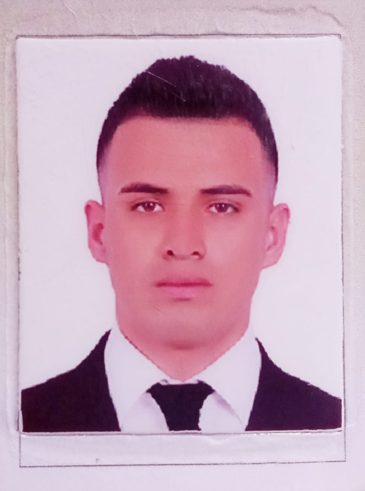

SOBRE MÍ
Josué Neftalí Lara Juárez
Apasionado por la Tecnología y la programación, organizado, constante aprendizaje, autodidacta, trabajo en equipo y consistente.
Información
Teléfono: 4961240318
Gmail: josueneftalilarajuarez@gmail.com
Edad: 22 años
Areas de Experiencia
Programador
Soporte técnico
-HABILIDADES
Manejo y creación de bases de datos, programación en lenguajes como Java Script, Python y java (Básico), Edición de video, Soporte técnico, Matemáticas, ingles intermedio, manejo de frameworks, control de versiones en git hub.
Habilidades Personales
Autodidacta
Comunicación
Empatía
Organización
Confianza
Consistencia
Software Manejados
Visual Studio Code
Codeingiter
Laravel
Angular
Adobe Illustrador
Adobe Photoshop
Filmora 9
Vue
Sublime text 3
Office
Ionic
Bootstarp
draw
etre otras.
-EDUCACIÓN
Colegio de Bachilleres del estado de Zacatecas Plantel Pinos.
(2015-2018).
TSU. en Tecnologías de la información y comunicación área desarrollo
de software multiplataforma (2018-2020).
Universidad Tecnológica del estado de Zacatecas
ING. en Tecnologías de la información y comunicación área desarrollo
de software multiplataforma (2020-Por concluir). Universidad
Tecnológica del estado de Zacatecas.
-EXPERIENCIA
Abril 2018 – Julio 2018
Capacitador asistente electoral - CAE (IEEZ):
-Participe en el proceso electoral del 2018 donde se eligió al actual
presidente de la república López Obrador.
-Me despeñe como CAE de dos secciones electorales.
-Desarrolle planeaciones de capacitación para mi equipo de trabajo.
-Fui el encargado de dos equipos de trabajo de 8 personas.
Mayo 2020 – Agosto 2020
Programador Web (Smart Energy Innovations):
-En mi proceso de estadía para titularme como técnico desarrolle un
proyecto (Página web) que era un sistema de cotización de sistemas
fotovoltaicos en línea (Con el apoyo de mi asesor académico)
-En dicho proyecto me desempeñe como programador, donde utilice
tecnologías y lenguajes como Codeigniter, php, html, mysql, Angular,
Java Script.
-Unos de los papeles importantes que realice durante el proceso fue la
creación absoluta de la base de datos (estructura, datos de entrada,
datos de salida, api, etc.)
Octubre 2020 – noviembre 2020
Instalación de red
-Colabore en la instalación de red por lo que cuento con el
conocimiento básico en dicho aspecto.
-Realice ponchado de cable, instalación de antena, de modem y lo
básico de configuración.
Abril 2021 – Junio 2021
Capacitador asistente electoral - CAE (IEEZ):
-Participe en el proceso electoral del 2021 donde se eligió al actual
Gobernador David Monreal Ávila.
-Me despeñe como CAE de dos secciones electorales (4 casillas).
-Desarrolle planeaciones de capacitación para mi equipo de trabajo.
-Fui el encargado de cuatro equipos de trabajo de 8 personas.
-Recibí reconocimiento como uno de los uno de los mejores CAE de
dicho proceso electoral, además de ser el 3er lugar en los promedios de
aceptación.